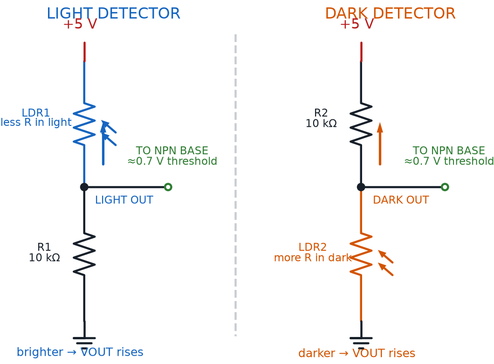

Sensing Light: Photoresistors and Dark Detectors
Summary
Students build the classic 'dark detector' night-light circuit using a photoresistor and a voltage divider, and meet the general vocabulary of analog and digital inputs that applies across every sensor in the kit.
Concepts Covered
This chapter covers the following 20 concepts from the learning graph:
- Multiple Button Combinations
- Combination Lock Circuit
- Light Sensor
- Photoresistor Resistance Range
- Photoresistor Response Time
- Photoresistor Voltage Divider
- Photocell Circuit
- Ambient Light Level
- Dark Vs Light Reading
- Dark Detector
- Sensor Threshold
- Analog Input
- Potentiometer Input
- Digital Input
- Digital Vs Analog Signal
- Trigger Input
- Manual Input Device
- Environmental Sensing
- Input Circuit Protection
- Button Press Duration
Prerequisites
This chapter builds on concepts from:
- 2. Current, Charge, Units, and Electrical Safety
- 9. Resistors and Capacitors
- 16. Switches, Buttons, and Wired Logic
Chapter 16 closed with a promise: the next switch would flip itself, no finger required. Before this chapter cashes in that promise, it has one more trick to teach you using buttons you already know how to wire — stacking more than two of them into a single, satisfying "click" of a Combination Lock Circuit. Then the chapter hands the switching job to something that never gets tired of holding a button down: light itself.
By the end of this chapter you'll have built a light-activated sensor circuit with your own hands, and you'll own a piece of vocabulary — Analog Input versus Digital Input — that applies to every single sensor this course still has waiting for you.
The Next Switch Flips Itself
 Welcome back, builder! Today starts with one more button trick, then hands you a genuine superpower: a circuit that can sense whether a room is light or dark, all on its own. No finger required. Let's light it up!
Welcome back, builder! Today starts with one more button trick, then hands you a genuine superpower: a circuit that can sense whether a room is light or dark, all on its own. No finger required. Let's light it up!
Beyond Two Switches: The Combination Lock Circuit
Chapter 16 wired exactly two switches together to build AND and OR logic. Nothing says you have to stop at two. A push button, a toggle switch, a slide switch — any switch a person operates directly with a finger or a hand — is an example of a Manual Input Device, a broad category covering every input in your kit that needs a human touch to work.
Multiple Button Combinations extends Chapter 16's series-AND idea past just two switches: wire three, four, or more push buttons one after another along a single path, and every single one of them has to be pressed and held at the same time before current can complete the loop. Miss even one, and the path stays broken exactly the way it did with two switches.
That single idea, scaled up, builds a genuinely fun project. A Combination Lock Circuit is a series-wired set of push buttons that only lights an "unlocked" LED when every correct button is pressed down at the same moment — the same logic as a classic dial-style bike lock, where every dial has to land on the right number simultaneously, not typed in one at a time like a keypad. Wire three buttons in series behind an LED, and that LED turns on only the instant all three fingers are down together.
Because every button in that lock is wired the same way you met in Chapter 16 — normally open, momentary, closing only while pressed — the circuit itself is built entirely from Digital Input signals: each button contributes exactly one of two possible states, pressed or not pressed, nothing in between. Stack enough digital inputs together in series, and you get a lock only the right combination of fingers can open.
- A bike combination lock, where every dial must land on the correct number at once
- An arcade fighting-game "combo" that only lands if buttons overlap in a tight window
- A piano chord, where several keys pressed together make one new sound
- A car's seatbelt-and-ignition interlock, which needs more than one condition true before the engine starts
One Path Still Needs Everyone
 Notice this is really just Chapter 16's Switch AND Logic wearing a disguise. One path, every switch on it has to cooperate — whether that path has two switches or twenty, the rule never changes.
Notice this is really just Chapter 16's Switch AND Logic wearing a disguise. One path, every switch on it has to cooperate — whether that path has two switches or twenty, the rule never changes.
Holding every button down at once introduces a detail Chapter 16 never had to deal with: how long you keep your fingers there. Button Press Duration is simply how long a button stays pressed before it's released, and in a combination lock circuit it matters enormously — the "unlocked" LED only stays lit for exactly as long as every button remains held down together. Let go of any single one, even for a fraction of a second, and the path breaks instantly.
That moment when the correct combination is finally achieved has its own name. A Trigger Input is an input condition specifically used to start, or "trigger," an action — as opposed to a signal a circuit just happens to be reading all the time. Completing the correct button combination is this circuit's trigger: nothing happens until that exact condition is met, and the instant it is, the LED responds.
Diagram: Combination Lock Circuit
Combination Lock Circuit
Type: microsim
sim-id: combination-lock-circuit
Library: p5.js
Status: Specified
Purpose: Let students press and hold three momentary push buttons on a rendered breadboard, in any order, and see for themselves that an "Unlocked" LED lights only during the exact window when all three are held down together, extending Chapter 16's two-switch series-AND idea to a three-switch combination lock.
Bloom Taxonomy: Understand (L2) / Apply (L3). Bloom Verb: demonstrate, predict.
Learning objective: Given a series-wired, three-button combination lock circuit, predict and verify which combinations of held-down buttons light the "Unlocked" LED, and observe that the LED goes dark the instant any single button is released.
Reuse check: An embeddings search (find-similar-templates, mode=reuse) for "Title: Combination Lock Circuit | Topic: Multiple push buttons wired in sequence, manual input device, trigger input, digital input, button press duration | Subjects: Electronics, Electric Circuits, Digital Logic | Grade Level: Junior High | Learning Objectives: Given a sequence of button presses, predict whether a combination lock circuit unlocks, demonstrating series wiring and ordered manual input" returned a top match of "Animated Switches MicroSim" (dmccreary/circuits, WHAT score 0.5691, recommendation "generate"), followed by "Switch Drawing MicroSim" (0.5536) and "Logic Gates" (0.5437) — all below the 0.60 template threshold and none built around a multi-button, press-and-hold combination lock. This is a new specification, and it is a strong candidate for the breadboard-sim-generator skill since it can directly extend this chapter's light-dark-detector breadboard rendering approach and this repository's existing breadboard-lib.js (already used by button-led-breadboard and wired-logic-and-or in Chapter 16) with three press-and-hold buttons in series.
Canvas layout: Main area shows a rendered breadboard with a battery pack, three labeled push buttons (Button 1, Button 2, Button 3) wired in series, and an "Unlocked" LED with its own current-limiting resistor at the end of the path; right side panel holds a live status readout listing each button's current state and a single combined "LOCKED / UNLOCKED" indicator.
Components/elements involved: A rendered breadboard with power and ground rails; a battery pack; three momentary push buttons at series tie-points; a current-limiting resistor and LED; connecting wires; an animated current-flow indicator on the wire segments.
Required interactivity: - Press-and-hold each button (mouse-down / touch-hold to press, release to let go); animated current only flows along the full path, and the LED only lights, while all three buttons are held simultaneously - The status panel updates live to show each button's pressed/released state and the combined lock state as each button is pressed or released - Button "Reset" releases all three buttons back to the default locked state
Default state: All three buttons released, LED dark, status panel reads "LOCKED — 0 of 3 buttons held."
Data Visibility Requirements: Stage 1: Show each button's individual pressed/released state Stage 2: Show the running count of how many buttons are currently held Stage 3: Show the animated current stopping at the first open (unpressed) button in the series path Stage 4: Show the LED lighting and status flipping to "UNLOCKED" only when the count reaches 3
Instructional Rationale: An Understand/Apply "demonstrate/predict" objective calls for a manipulable circuit with a visible cause-and-effect chain, so students can press combinations themselves and directly observe that a single released button breaks the whole path, rather than reading the rule as an abstract statement.
Color scheme: Green animated current dots while flowing, gray and static when a button in the path is open; red "LOCKED" and green "UNLOCKED" text in the status panel, consistent with the palette used in Chapter 16's wired-logic diagram.
Responsive behavior: Breadboard view and the status panel stack vertically on narrow screens; buttons support tap-and-hold on touch devices as an alternative to click-and-hold.
Implementation: p5.js, built on the breadboard-sim-generator rendering approach (real tie-point hole grid, component placement, and animated current flow).
Watch what happens the instant you let go of just one button in a circuit like that — the whole path breaks, and the LED goes dark immediately, no matter how long the other two stayed held. That's Button Press Duration and Trigger Input working together: the lock only ever responds to the single, exact instant every condition lines up at once.
A Switch With No Fingers: Meet the Light Sensor
Every input so far in this course — buttons, toggles, sliders — has needed a human hand. That's about to change. A Light Sensor is any component whose electrical behavior changes measurably with the amount of light hitting it, which means it can act as an input without anyone touching it at all.
The specific light sensor in your $50 kit is a photoresistor, sometimes called an LDR (light-dependent resistor) — a resistor whose resistance value isn't fixed like the resistors from Chapter 9, but instead falls as more light lands on its zig-zag surface and rises as the room goes darker. A circuit built around a light sensor is doing Environmental Sensing: reacting automatically to a real, physical condition in its surroundings, rather than waiting for a person to flip a switch.
The specific physical quantity a light sensor measures has its own name too. Ambient Light Level is the general brightness of a space at a given moment — the overall room lighting a sensor circuit is designed to react to, not a single flash aimed directly at it. A light sensor's whole job is turning that one physical quantity into an electrical signal the rest of a circuit can use, and just how much a photoresistor's resistance actually swings is worth seeing in real numbers.
| Light Condition | Typical Photoresistor Resistance (this course's kit) |
|---|---|
| Full darkness | Close to 100,000 Ω (100 kΩ) |
| Dim room light | Roughly 20,000-50,000 Ω |
| Bright daylight | Well under 1,000 Ω |
That full swing — from about 100,000 Ω down to under 1,000 Ω — is a photoresistor's Photoresistor Resistance Range, and it's the whole reason this simple component can tell a circuit whether a room is bright or dark. Every individual photoresistor's exact numbers vary a little by part, so measuring your own kit's photoresistor with a multimeter at both extremes is worth doing once, before you rely on it.
Not Quite Instant
 A push button reacts to your finger in a fraction of a millisecond. A photoresistor is a little slower on the draw — its Photoresistor Response Time is the brief delay, typically tens of milliseconds, between a light change hitting its surface and its resistance fully settling to match. That's still far faster than you can see with your own eyes, so a hand covering the sensor or a room light flicking on feels instant to you — but it does mean a photoresistor isn't the right part for tracking something that flickers faster than a human eye can follow, like a strobe light.
A push button reacts to your finger in a fraction of a millisecond. A photoresistor is a little slower on the draw — its Photoresistor Response Time is the brief delay, typically tens of milliseconds, between a light change hitting its surface and its resistance fully settling to match. That's still far faster than you can see with your own eyes, so a hand covering the sensor or a room light flicking on feels instant to you — but it does mean a photoresistor isn't the right part for tracking something that flickers faster than a human eye can follow, like a strobe light.
From Resistance to Voltage: The Photoresistor Voltage Divider
A changing resistance is only useful if the rest of the circuit can read it, and resistance alone isn't something a transistor or an LED can respond to directly. Chapter 9 already showed you the fix: put two resistors in series across a supply voltage, and the point between them settles at a predictable fraction of that supply — the voltage divider equation, \( V_{out} = V_{in} \times \frac{R_2}{R_1 + R_2} \), from Chapter 9's two-resistor circuit.
A Photoresistor Voltage Divider simply swaps one of those two ordinary resistors for a photoresistor, so that as ambient light changes and the photoresistor's resistance rises or falls, the divider's output voltage rises or falls right along with it — turning a resistance change into a voltage change the rest of the circuit can act on. Chapter 9 practically predicted this move: swap one resistor for a photoresistor, and that same simple circuit can sense light.
Zoom out one more level and you get the whole assembly's name. A Photocell Circuit is the complete input stage built around that photoresistor voltage divider — the photoresistor, its partner resistor, and whatever comes next to read the divider's output — considered as one working unit, ready to hand its voltage reading off to a transistor, just like Chapter 13's transistor switch picked up a signal from a button.
Same Two Resistors, Brand New Job
Nothing about the voltage divider equation changed from Chapter 9 — only one resistor's value did, and now it changes itself, all day long, just by sitting in a room. That's the entire trick behind sensing the world with two resistors and a little math.
Diagram: Light Detector and Dark Detector Voltage Dividers

Finding the Trip Point: Sensor Threshold and the Dark Detector
A divider voltage that smoothly rises and falls is useful, but most projects don't want a smooth response — they want something to snap decisively on or off. That's exactly the transistor switch from Chapter 13 — cutoff when base current is too small, saturation once it isn't — except this time you're tracking the base voltage the divider delivers, because a typical silicon transistor lets essentially no base current flow until that voltage crosses about 0.7 V. Cross it, and the transistor snaps from cutoff to saturation almost immediately.
Photoresistor Divider Voltage
where:
- \( V_{divider} \) is the voltage divider's output voltage, in volts
- \( V_{in} \) is the supply voltage, in volts
- \( R_{LDR} \) is the photoresistor's resistance at the current light level, in ohms
- \( R_2 \) is the divider's fixed resistor, in ohms
That 0.7 V crossing point has a name of its own. A Sensor Threshold is the specific input value at which a circuit's output flips from one state to the other — below it, nothing happens; at and above it, the output snaps on. Everything about tuning a sensor circuit, from picking \( R_2 \)'s value to choosing where a project's "trip point" sits, is really just choosing where that threshold falls.
Picking a good threshold starts with two reference numbers. Dark Vs Light Reading is the practice of comparing a sensor's output at its two extremes — what the divider reads in full darkness, and what it reads in full light — before deciding where in between the threshold should sit. Try the MicroSim below and take exactly those two readings yourself.
Diagram: Light and Dark Detector
Light and Dark Detector (reused MicroSim)
Type: microsim
sim-id: light-dark-detector
Library: p5.js
Status: Reused
Source: docs/sims/light-dark-detector/ (local reuse — already deployed in this same book)
Reused from this book's own MicroSim library (local reuse, not an external-catalog match). Bloom Taxonomy: Understand (L2) / Apply (L3). Bloom Verb: explain, demonstrate, predict. Learning objective: Sweep a simulated ambient light level from 0% to 100% and observe a photoresistor voltage divider's output rise smoothly while the transistor-driven LED and buzzer switch abruptly at the 0.7 V sensor threshold, connecting a continuous analog input to a discrete on/off output.
Slide the light level up slowly and watch the divider voltage climb the entire time, long before the LED reacts at all — that gap between a smooth input and a snap-on output is the sensor threshold in action. Notice, too, which direction this particular circuit trips: the LED and buzzer switch on as the room gets brighter, not darker, because the photoresistor sits on the supply side of the divider.
That last detail matters, because "dark detector" describes a whole family of circuits, not one fixed wiring. A Dark Detector is a sensor circuit that automatically turns something on — an LED, a buzzer, a night light — as ambient light level falls, the opposite trigger direction from the circuit you just tested. Swap which resistor sits on the supply side of the divider — put the fixed resistor above the photoresistor instead of below it — and the exact same parts, wired the other way around, become a true dark detector: dark room, LED on; bright room, LED off.
One Swap Flips the Whole Circuit
 This trips a lot of builders up the first time, so don't worry if it takes a second read: the only thing deciding whether a photoresistor divider is a light-triggered circuit or a true dark detector is which of the two resistors sits closer to the supply rail. Same parts, same math, opposite behavior — that's a genuinely satisfying "aha" once it clicks.
This trips a lot of builders up the first time, so don't worry if it takes a second read: the only thing deciding whether a photoresistor divider is a light-triggered circuit or a true dark detector is which of the two resistors sits closer to the supply rail. Same parts, same math, opposite behavior — that's a genuinely satisfying "aha" once it clicks.
Zooming Out: Analog Input Versus Digital Input
Step back from photoresistors for a moment, because the pattern underneath this whole chapter is bigger than one component. A combination lock's push buttons and a photoresistor's voltage divider are both "inputs" — but they behave in completely different ways, and that difference has a name that will matter for every sensor still ahead in this course.
A Digital Input — like every push button in the combination lock circuit — can only ever report one of exactly two states: pressed or not pressed, on or off, nothing in between. An Analog Input is the opposite: a signal that can smoothly take on any value across a continuous range, exactly like the photoresistor voltage divider's output climbing gradually from near 0 V toward the supply voltage as the room brightens.
You've actually already met a second example of an analog input, back in Chapters 9 and 12. A Potentiometer Input is the continuously variable voltage a potentiometer's wiper produces as you turn its dial by hand — mechanically operated instead of light-operated, but electrically behaving exactly like the photoresistor's divider output: no fixed number of states, just a smooth range from one end to the other.
That contrast between the two families is worth pinning down in one place.
| Digital Input | Analog Input | |
|---|---|---|
| Number of possible states | Exactly two (on / off) | A continuous range of values |
| Example from this chapter | Combination lock push button | Photoresistor voltage divider |
| Example from Chapters 9 & 12 | — | Potentiometer wiper |
| What changes it | A finger pressing or releasing | Light level, or a dial position |
| How a circuit reads it | Simple open/closed path | A voltage compared against a threshold |
This bigger idea — Digital Vs Analog Signal — is really the whole chapter compressed into one row of that table: a digital signal reports a state, an analog signal reports a value, and turning an analog value into a digital, on/off decision is exactly the job a sensor threshold performs.
One last piece of vocabulary belongs here, and it will follow you into every sensor circuit this course still has to offer. Input Circuit Protection is the practice of including a resistor — a base resistor, a current-limiting resistor, or a similar part — between a sensitive input and whatever is driving it, so a surge of current can't damage the component reading the signal. The light-dark detector's base resistor does exactly this job for the transistor, the same way a current-limiting resistor protects an LED: it's not optional decoration, it's the difference between a working sensor input and a fried one.
Every Sensor Speaks One of Two Languages
 From here on, whenever you meet a new sensor, ask one question first: does it report a simple on/off state, or a smoothly changing value? That single question tells you whether you're looking at a Digital Input or an Analog Input — and honestly, that's half the battle of understanding any new sensor at a glance.
From here on, whenever you meet a new sensor, ask one question first: does it report a simple on/off state, or a smoothly changing value? That single question tells you whether you're looking at a Digital Input or an Analog Input — and honestly, that's half the battle of understanding any new sensor at a glance.
Chapter Summary: Key Takeaways
You started with one more button trick and ended up building a circuit that senses the world without anyone touching it. Here's what's now part of your toolkit:
- Manual Input Devices like push buttons combine into Multiple Button Combinations; wired in series, they build a Combination Lock Circuit where every Digital Input must hit its Trigger Input condition at once, for exactly as long as its Button Press Duration lasts
- A Light Sensor performs Environmental Sensing by reacting to Ambient Light Level, swinging across its Photoresistor Resistance Range with a brief Photoresistor Response Time
- A Photoresistor Voltage Divider — the heart of any Photocell Circuit — turns a changing resistance into a changing voltage, using the same equation Chapter 9 introduced
- Comparing a Dark Vs Light Reading sets a circuit's Sensor Threshold, and swapping which resistor sits on top turns a light-triggered circuit into a true Dark Detector
- Analog Input (photoresistors, Potentiometer Input) reports a continuous range of values; Digital Input reports only two states — that's the Digital Vs Analog Signal distinction — and Input Circuit Protection keeps every sensor input safe from current surges
Chapter 18 stays with light but flips the direction: instead of sensing it, you'll start mixing it, combining red, green, and blue LEDs into custom colors, and putting a motor under your circuit's control for the first time.
Environmental Sensing: Unlocked
 Huge one, builder! Your circuits can now sense their environment — no finger, no button, just light doing the work. That's a real superpower, and it's going to show up again and again as this course goes on. Current's flowing your way — see you in Chapter 18, where things get colorful!
Huge one, builder! Your circuits can now sense their environment — no finger, no button, just light doing the work. That's a real superpower, and it's going to show up again and again as this course goes on. Current's flowing your way — see you in Chapter 18, where things get colorful!